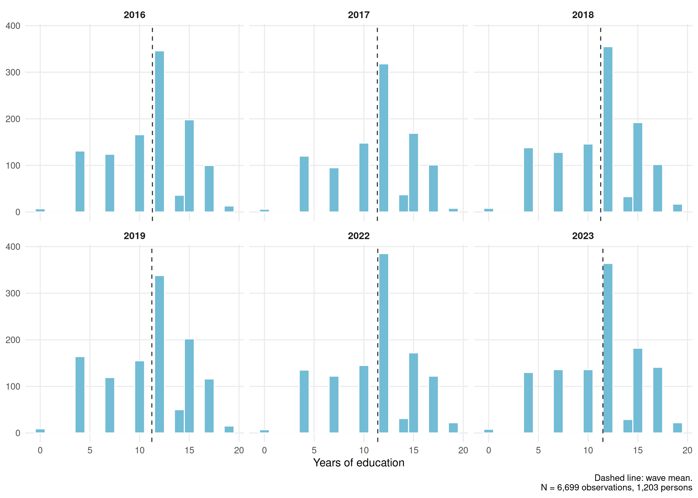
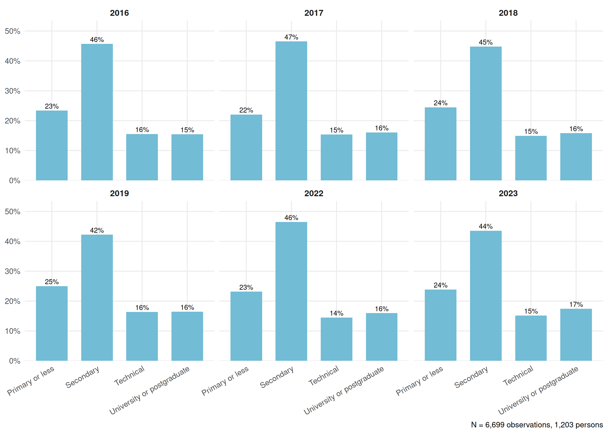
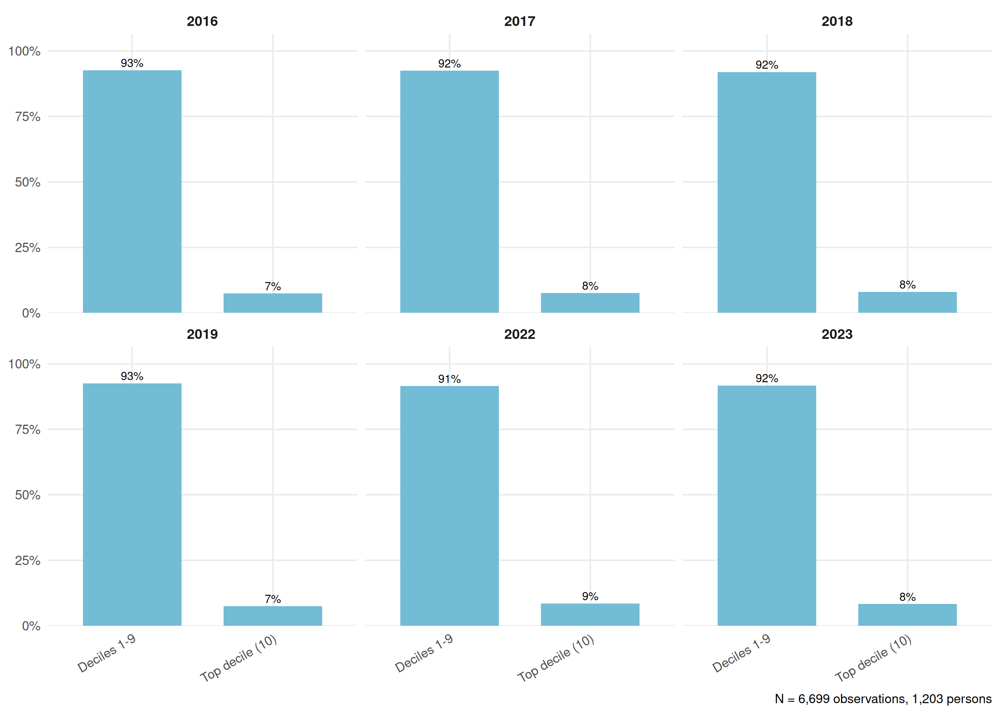
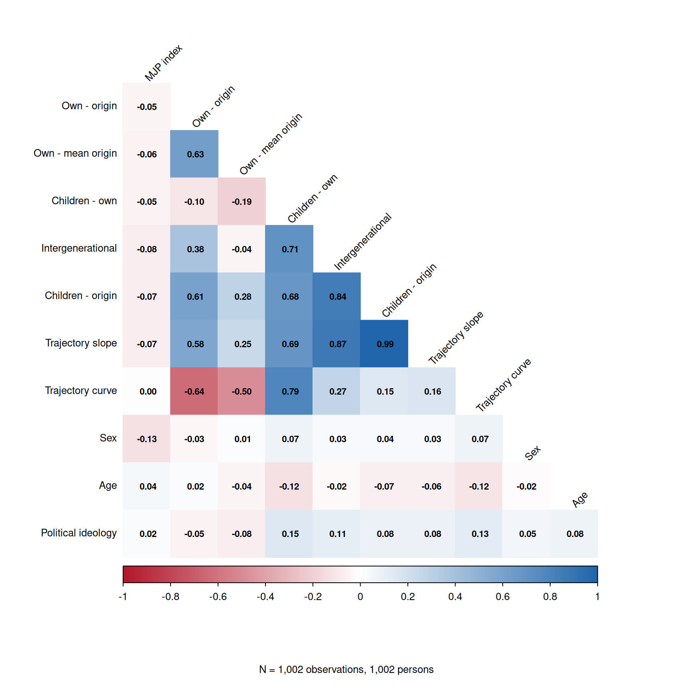
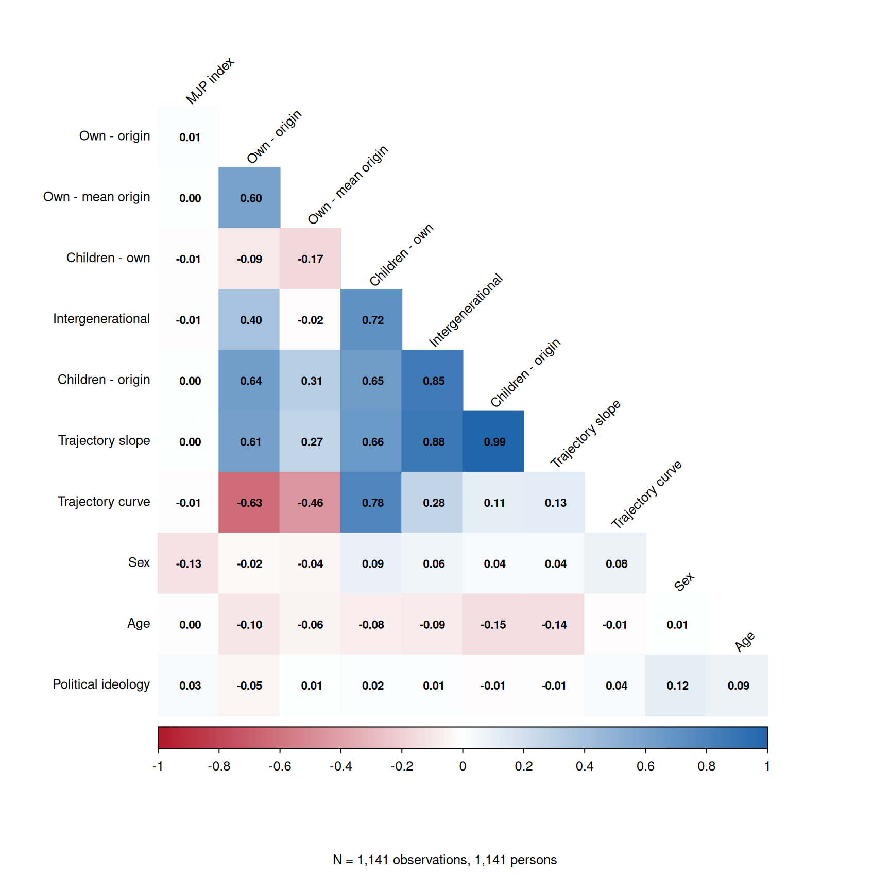
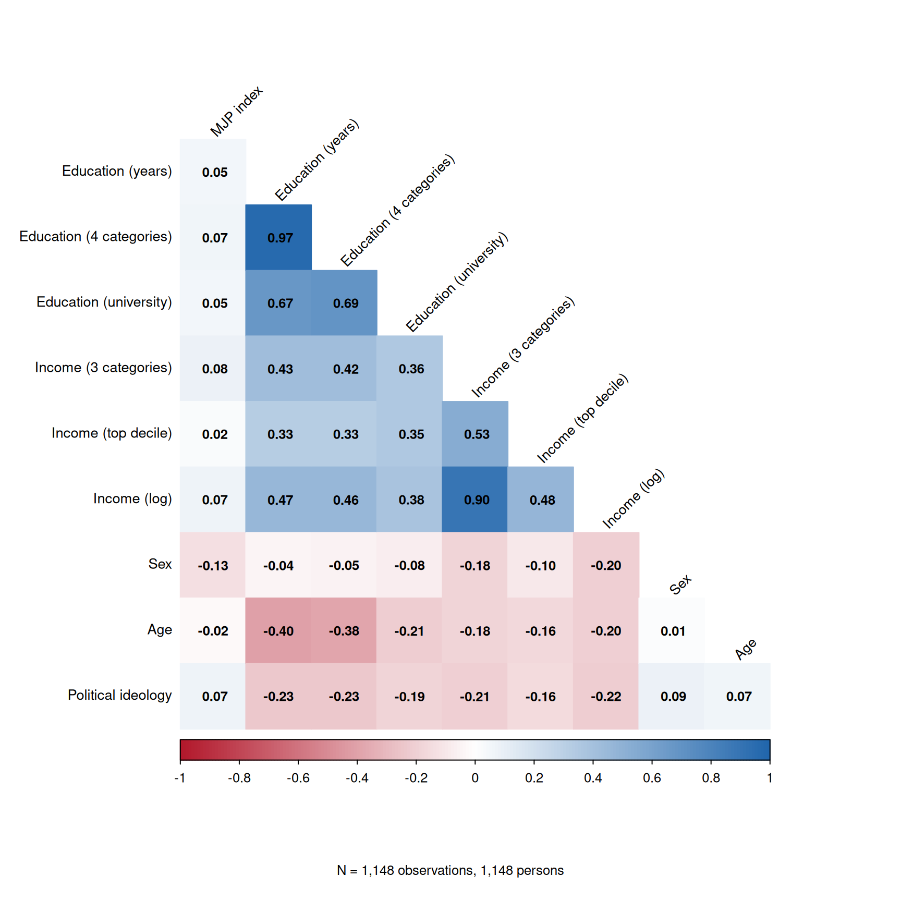

Code
plot_mov("mov_dir") +
labs(title = NULL,
caption = paste0("Dashed line: wave mean. Solid line: no mobility (0).\n", n_note("mov_dir")))
plot_mov("mov_dir") +
labs(title = NULL,
caption = paste0("Dashed line: wave mean. Solid line: no mobility (0).\n", n_note("mov_dir")))plot_mov("mov_og") +
labs(title = NULL,
caption = paste0("Dashed line: wave mean. Solid line: no mobility (0).\n", n_note("mov_og")))
plot_mov("mov_exp") +
labs(title = NULL,
caption = paste0("Dashed line: wave mean. Solid line: no mobility (0).\n", n_note("mov_exp")))
plot_mov("mov_inter") +
labs(title = NULL,
caption = paste0("Dashed line: wave mean. Solid line: no mobility (0).\n", n_note("mov_inter")))
plot_mov("mov_exp_og") +
labs(title = NULL,
caption = paste0("Dashed line: wave mean. Solid line: no mobility (0).\n", n_note("mov_exp_og")))
plot_mov("ess_traj") +
labs(title = NULL,
caption = paste0("Dashed line: wave mean. Solid line: no mobility (0).\n", n_note("ess_traj")))
Subjective mobility.
Own - origin: mean +0.48
Own - mean origin: mean +0.48
Children - own: mean +2.0
Children - origin: mean +2.5
Intergenerational (children - own - origin): mean -1.9
Trajectory slope: mean +1.25
Most of the averages for subjective mobility variables are positive (excepting intergenerational mobility), with the highest being subjective mobility between parental and child status
The trajectory of subjective social status shows a positive value, indicating that, on average, people believe they have a positive trajectory throughout the different stages of their lives
plot_obj_cont("educyear", binwidth = 1, xlab = "Years of education")
plot_obj_cat("educ_4")
plot_obj_cat("educ")
plot_obj_cat("inc_group")
plot_obj_cat("dummy_decile10",
labs = c("0" = "Deciles 1-9", "1" = "Top decile (10)"))
plot_obj_cont("ln_inc_eq_real_sqrt", binwidth = 0.25,
xlab = "Log equivalised household income (CLP, Dec 2023)")
The average number of years of education remains stable at ~11 years, while a breakdown by educational level shows that those with a college education account for approximately 16% of the sample in each wave.
The (log) income distribution is roughly symmetrical, with a slight left skew in years such as 2019, 2022, and 2023. A breakdown by income deciles shows that the majority of the sample is concentrated in the lower and middle deciles.
plot_cor_wave(1)
plot_cor_wave(2)
plot_cor_wave(3)
plot_cor_wave(4)
plot_cor_wave(5)
plot_cor_wave(6)
One’s own subjective social status correlates more strongly with the subjective social status of one’s children and that of one’s parents, while the association between the subjective social status of one’s children and that of one’s parents is weaker. This suggests that the perception of one’s own social status is more closely related to the perception of children’s social status than to that of parents, which may reflect a greater concern for the well-being of one’s offspring compared to that of one’s parents.
Variables related to subjective social status show a very weak correlation with market justice; the highest correlation across all waves is 0.13 with one’s own status and that of one’s family.
plot_cor_mov(1)
plot_cor_mov(2)
plot_cor_mov(3)plot_cor_mov(4)plot_cor_mov(5)
plot_cor_mov(6)
The strongest correlation is between the trajectory of subjective status and mobility between the parent’s and child’s status, with a nearly perfect correlation. This may indicate that the status trajectory does not take one’s own status into account
The quadratic trajectory, on the other hand, shows a strong negative correlation with mobility between one’s origin and current status, revealing a difference in pattern compared to the linear trajectory
plot_cor_obj(1)
plot_cor_obj(2)
plot_cor_obj(3)
plot_cor_obj(4)plot_cor_obj(5)
plot_cor_obj(6)
The correlations between the MJP index and objective social status variables are all positive but weak.
All correlations between income and education (taking into account their various operationalizations) show positive effects ranging from moderate to large in magnitude.
Overall, associations with MJP are weak in every matrix: across waves, the strongest are 0.16 in absolute value (log income and income group), 0.13 for own and origin SSS, and 0.12 for mobility (intergenerational mobility, negative). The high correlations are between measures of the same construct: the different operationalizations of education or income, and the mobility measures derived from the same SSS items (trajectory slope with children - origin, 0.99).
Based on separate models of subjective social status, subjective mobility, and objective status, a final proposal for the model is presented. In these subsections, the following variables were selected: subjective mobility between one’s own status and that of one’s children; intergenerational mobility; mobility between one’s status of origin and that of one’s children; and, finally, social trajectory. These were the variables that were shown to have some effect on market justice preferences, and therefore they were prioritized over the others. Furthermore, a model structure is generated that includes two modeling approaches for the objective variables: one using dichotomized educational attainment and income divided into three categories, and another using years of education and logarithmic income. This distinction was made to incorporate the WE effect of education and income into the model, which serves as a proxy for objective mobility.
# Same specification as the models above (lmer, REML = FALSE, random intercept
# and wave slope by respondent). Each subjective mobility variable enters
# together with education and income (WE/BE). Order of the models:
# 1. each mobility variable with education and income (models 39-42)
# 2. the same models with controls (models 43-46)
# 3. all variables together, with controls (model 47)
# Children - own, intergenerational, children - origin and the trajectory slope
# are linear combinations of the SSS measures, so in the full model aliased
# terms (if any) are dropped by lmer.
fit_mo <- function(terms, controls = FALSE) {
rhs <- c("ola_num", "ola_2",
if (controls) c("ideo", "sex", "age"),
terms,
"(1 + ola_num | idencuesta)")
lmer(reformulate(rhs, response = "mjp_index"), REML = FALSE, data = df_model)
}
mo_mov <- list(
mov_exp = c("mov_exp_cwc", "mov_exp_mean"),
mov_inter = c("mov_inter_cwc", "mov_inter_mean"),
mov_exp_og = c("mov_exp_og_cwc", "mov_exp_og_mean"),
# trajectory slope models include the SSS index (WE/BE) as a control
ess_traj = c("ess_traj_cwc", "ess_traj_mean", "sss_index_cwc", "sss_index_mean")
)
mo_oss <- c("educyear_cwc", "educyear_mean",
"ln_inc_eq_real_sqrt_cwc", "ln_inc_eq_real_sqrt_mean")
# 1. each mobility variable with education and income / 2. with controls
mo_models <- lapply(mo_mov, function(m) fit_mo(c(m, mo_oss)))
mo_models_c <- lapply(mo_mov, function(m) fit_mo(c(m, mo_oss), controls = TRUE))
# 3. all variables (with controls)
mo_models_c[["all"]] <- fit_mo(c(unlist(mo_mov), mo_oss), controls = TRUE)mo_coef <- list(
"(Intercept)" = "Intercept",
ola_num = "Wave",
ola_2 = "Wave^2",
mov_exp_cwc = "Expected mobility children - own (WE)",
mov_exp_mean = "Expected mobility children - own (BE)",
mov_inter_cwc = "Intergenerational mobility (WE)",
mov_inter_mean = "Intergenerational mobility (BE)",
mov_exp_og_cwc = "Expected mobility children - origin (WE)",
mov_exp_og_mean = "Expected mobility children - origin (BE)",
ess_traj_cwc = "SSS trajectory slope (WE)",
ess_traj_mean = "SSS trajectory slope (BE)",
educyear_cwc = "Education in years (WE)",
educyear_mean = "Education in years (BE)",
ln_inc_eq_real_sqrt_cwc = "Log income (WE)",
ln_inc_eq_real_sqrt_mean = "Log income (BE)",
sss_index_cwc = "SSS index (WE)",
sss_index_mean = "SSS index (BE)",
sexFemale = "Sex: Female (ref. Male)",
age = "Age",
ideoCenter = "Political ideology: Center (ref. Left)",
ideoRight = "Political ideology: Right (ref. Left)",
`ideoDoes not identify` = "Political ideology: Does not identify (ref. Left)"
)
mo_note <- "Note: WE = within-person effect; BE = between-person effect. Model 47 includes all variables; mobility measures are linear combinations of the SSS measures, so aliased terms (if any) are dropped by lmer (empty cells). Models including the trajectory slope also control for the SSS index (WE/BE), the mean of own, family-of-origin and children's SSS. Cells contain regression coefficients with standard errors in parentheses. %stars."
htmlreg(mo_models,
custom.model.names = paste0("Model ", 39:42),
caption.above = T,
caption = NULL,
stars = c(0.05, 0.01, 0.001),
custom.coef.map = mo_coef,
digits = 3,
leading.zero = T,
include.loglik = FALSE,
include.aic = FALSE,
center = T,
custom.note = mo_note)| Model 39 | Model 40 | Model 41 | Model 42 | |
|---|---|---|---|---|
| Intercept | 0.316 | 0.241 | 0.145 | 0.138 |
| (0.371) | (0.361) | (0.358) | (0.358) | |
| Wave | -0.140*** | -0.139*** | -0.140*** | -0.140*** |
| (0.025) | (0.025) | (0.025) | (0.025) | |
| Wave^2 | 0.031*** | 0.031*** | 0.031*** | 0.031*** |
| (0.003) | (0.003) | (0.003) | (0.003) | |
| Expected mobility children - own (WE) | -0.013* | |||
| (0.006) | ||||
| Expected mobility children - own (BE) | -0.035** | |||
| (0.013) | ||||
| Intergenerational mobility (WE) | -0.011** | |||
| (0.004) | ||||
| Intergenerational mobility (BE) | -0.025** | |||
| (0.008) | ||||
| Expected mobility children - origin (WE) | -0.014** | |||
| (0.005) | ||||
| Expected mobility children - origin (BE) | -0.025** | |||
| (0.010) | ||||
| SSS trajectory slope (WE) | -0.028** | |||
| (0.010) | ||||
| SSS trajectory slope (BE) | -0.049* | |||
| (0.019) | ||||
| Education in years (WE) | 0.005 | 0.005 | 0.005 | 0.005 |
| (0.007) | (0.007) | (0.007) | (0.007) | |
| Education in years (BE) | -0.005 | -0.007 | -0.006 | -0.007 |
| (0.005) | (0.005) | (0.005) | (0.005) | |
| Log income (WE) | -0.017 | -0.018 | -0.016 | -0.016 |
| (0.022) | (0.022) | (0.022) | (0.022) | |
| Log income (BE) | 0.144*** | 0.142*** | 0.158*** | 0.152*** |
| (0.031) | (0.030) | (0.030) | (0.030) | |
| SSS index (WE) | 0.004 | |||
| (0.008) | ||||
| SSS index (BE) | 0.018 | |||
| (0.017) | ||||
| BIC | 16021.534 | 16015.550 | 16018.211 | 16034.465 |
| Num. obs. | 6699 | 6699 | 6699 | 6699 |
| Num. groups: idencuesta | 1203 | 1203 | 1203 | 1203 |
| Var: idencuesta (Intercept) | 0.182 | 0.179 | 0.179 | 0.179 |
| Var: idencuesta ola_num | 0.009 | 0.009 | 0.009 | 0.009 |
| Cov: idencuesta (Intercept) ola_num | -0.017 | -0.017 | -0.017 | -0.017 |
| Var: Residual | 0.501 | 0.501 | 0.501 | 0.501 |
| Note: WE = within-person effect; BE = between-person effect. Model 47 includes all variables; mobility measures are linear combinations of the SSS measures, so aliased terms (if any) are dropped by lmer (empty cells). Models including the trajectory slope also control for the SSS index (WE/BE), the mean of own, family-of-origin and children’s SSS. Cells contain regression coefficients with standard errors in parentheses. ***p < 0.001; **p < 0.01; *p < 0.05. | ||||
htmlreg(mo_models_c,
custom.model.names = paste0("Model ", 43:47),
caption.above = T,
caption = NULL,
stars = c(0.05, 0.01, 0.001),
custom.coef.map = mo_coef,
digits = 3,
leading.zero = T,
include.loglik = FALSE,
include.aic = FALSE,
center = T,
custom.note = mo_note)| Model 43 | Model 44 | Model 45 | Model 46 | Model 47 | |
|---|---|---|---|---|---|
| Intercept | 0.467 | 0.440 | 0.368 | 0.373 | 0.470 |
| (0.387) | (0.380) | (0.376) | (0.376) | (0.389) | |
| Wave | -0.141*** | -0.141*** | -0.142*** | -0.141*** | -0.141*** |
| (0.025) | (0.025) | (0.025) | (0.025) | (0.025) | |
| Wave^2 | 0.030*** | 0.030*** | 0.030*** | 0.030*** | 0.030*** |
| (0.003) | (0.003) | (0.003) | (0.003) | (0.003) | |
| Expected mobility children - own (WE) | -0.013* | -0.003 | |||
| (0.006) | (0.009) | ||||
| Expected mobility children - own (BE) | -0.022 | -0.006 | |||
| (0.013) | (0.018) | ||||
| Intergenerational mobility (WE) | -0.011** | -0.003 | |||
| (0.004) | (0.009) | ||||
| Intergenerational mobility (BE) | -0.016* | -0.016 | |||
| (0.008) | (0.017) | ||||
| Expected mobility children - origin (WE) | -0.013** | -0.009 | |||
| (0.005) | (0.009) | ||||
| Expected mobility children - origin (BE) | -0.016 | 0.003 | |||
| (0.009) | (0.019) | ||||
| SSS trajectory slope (WE) | -0.027** | ||||
| (0.010) | |||||
| SSS trajectory slope (BE) | -0.031 | ||||
| (0.019) | |||||
| Education in years (WE) | 0.005 | 0.005 | 0.005 | 0.005 | 0.005 |
| (0.007) | (0.007) | (0.007) | (0.007) | (0.007) | |
| Education in years (BE) | 0.006 | 0.004 | 0.005 | 0.004 | 0.004 |
| (0.005) | (0.005) | (0.005) | (0.005) | (0.005) | |
| Log income (WE) | -0.020 | -0.020 | -0.018 | -0.019 | -0.019 |
| (0.022) | (0.022) | (0.022) | (0.022) | (0.022) | |
| Log income (BE) | 0.104*** | 0.102*** | 0.112*** | 0.108*** | 0.100** |
| (0.031) | (0.031) | (0.030) | (0.031) | (0.032) | |
| SSS index (WE) | 0.001 | ||||
| (0.008) | |||||
| SSS index (BE) | 0.012 | ||||
| (0.016) | |||||
| Sex: Female (ref. Male) | -0.142*** | -0.145*** | -0.143*** | -0.145*** | -0.144*** |
| (0.031) | (0.031) | (0.031) | (0.031) | (0.031) | |
| Age | 0.004*** | 0.004*** | 0.004*** | 0.004*** | 0.004*** |
| (0.001) | (0.001) | (0.001) | (0.001) | (0.001) | |
| Political ideology: Center (ref. Left) | 0.140*** | 0.135*** | 0.137*** | 0.136*** | 0.136*** |
| (0.030) | (0.030) | (0.030) | (0.030) | (0.030) | |
| Political ideology: Right (ref. Left) | 0.255*** | 0.249*** | 0.254*** | 0.251*** | 0.250*** |
| (0.036) | (0.036) | (0.036) | (0.036) | (0.036) | |
| Political ideology: Does not identify (ref. Left) | 0.155*** | 0.151*** | 0.153*** | 0.152*** | 0.152*** |
| (0.029) | (0.029) | (0.029) | (0.029) | (0.029) | |
| BIC | 15982.125 | 15978.970 | 15979.543 | 15996.585 | 16012.932 |
| Num. obs. | 6699 | 6699 | 6699 | 6699 | 6699 |
| Num. groups: idencuesta | 1203 | 1203 | 1203 | 1203 | 1203 |
| Var: idencuesta (Intercept) | 0.171 | 0.170 | 0.169 | 0.169 | 0.169 |
| Var: idencuesta ola_num | 0.008 | 0.008 | 0.008 | 0.008 | 0.008 |
| Cov: idencuesta (Intercept) ola_num | -0.018 | -0.018 | -0.017 | -0.017 | -0.017 |
| Var: Residual | 0.502 | 0.501 | 0.502 | 0.502 | 0.502 |
| Note: WE = within-person effect; BE = between-person effect. Model 47 includes all variables; mobility measures are linear combinations of the SSS measures, so aliased terms (if any) are dropped by lmer (empty cells). Models including the trajectory slope also control for the SSS index (WE/BE), the mean of own, family-of-origin and children’s SSS. Cells contain regression coefficients with standard errors in parentheses. ***p < 0.001; **p < 0.01; *p < 0.05. | |||||
# Same structure as the models of the previous section (lmer, REML = FALSE,
# random intercept and wave slope by respondent), replacing education in years
# and log income by dichotomous education (BE, ever university) and income in
# 3 categories (BE, modal group across waves; ref. Bottom). Order of the models:
# 1. each mobility variable with education and income (models 48-51)
# 2. the same models with controls (models 52-55)
# 3. all variables together, with controls (model 56)
mo2_oss <- c("dummy_educ_mean", "inc_group_be")
mo2_models <- lapply(mo_mov, function(m) fit_mo(c(m, mo2_oss)))
mo2_models_c <- lapply(mo_mov, function(m) fit_mo(c(m, mo2_oss), controls = TRUE))
mo2_models_c[["all"]] <- fit_mo(c(unlist(mo_mov), mo2_oss), controls = TRUE)mo2_coef <- list(
"(Intercept)" = "Intercept",
ola_num = "Wave",
ola_2 = "Wave^2",
mov_exp_cwc = "Expected mobility children - own (WE)",
mov_exp_mean = "Expected mobility children - own (BE)",
mov_inter_cwc = "Intergenerational mobility (WE)",
mov_inter_mean = "Intergenerational mobility (BE)",
mov_exp_og_cwc = "Expected mobility children - origin (WE)",
mov_exp_og_mean = "Expected mobility children - origin (BE)",
ess_traj_cwc = "SSS trajectory slope (WE)",
ess_traj_mean = "SSS trajectory slope (BE)",
dummy_educ_mean = "University education (BE)",
inc_group_beMiddle = "Income: Middle (BE, ref. Bottom)",
inc_group_beTop = "Income: Top (BE, ref. Bottom)",
sss_index_cwc = "SSS index (WE)",
sss_index_mean = "SSS index (BE)",
sexFemale = "Sex: Female (ref. Male)",
age = "Age",
ideoCenter = "Political ideology: Center (ref. Left)",
ideoRight = "Political ideology: Right (ref. Left)",
`ideoDoes not identify` = "Political ideology: Does not identify (ref. Left)"
)
mo2_note <- "Note: WE = within-person effect; BE = between-person effect. University education (BE): ever university education. Income (BE): person's modal income group across waves. Model 56 includes all variables; mobility measures are linear combinations of the SSS measures, so aliased terms (if any) are dropped by lmer (empty cells). Models including the trajectory slope also control for the SSS index (WE/BE), the mean of own, family-of-origin and children's SSS. Cells contain regression coefficients with standard errors in parentheses. %stars."
htmlreg(mo2_models,
custom.model.names = paste0("Model ", 48:51),
caption.above = T,
caption = NULL,
stars = c(0.05, 0.01, 0.001),
custom.coef.map = mo2_coef,
digits = 3,
leading.zero = T,
include.loglik = FALSE,
include.aic = FALSE,
center = T,
custom.note = mo2_note)| Model 48 | Model 49 | Model 50 | Model 51 | |
|---|---|---|---|---|
| Intercept | 2.037*** | 1.916*** | 2.015*** | 1.913*** |
| (0.054) | (0.046) | (0.051) | (0.093) | |
| Wave | -0.140*** | -0.139*** | -0.140*** | -0.140*** |
| (0.025) | (0.025) | (0.025) | (0.025) | |
| Wave^2 | 0.031*** | 0.031*** | 0.031*** | 0.031*** |
| (0.003) | (0.003) | (0.003) | (0.003) | |
| Expected mobility children - own (WE) | -0.013* | |||
| (0.006) | ||||
| Expected mobility children - own (BE) | -0.037** | |||
| (0.013) | ||||
| Intergenerational mobility (WE) | -0.012** | |||
| (0.004) | ||||
| Intergenerational mobility (BE) | -0.026** | |||
| (0.008) | ||||
| Expected mobility children - origin (WE) | -0.014** | |||
| (0.005) | ||||
| Expected mobility children - origin (BE) | -0.024* | |||
| (0.010) | ||||
| SSS trajectory slope (WE) | -0.029** | |||
| (0.010) | ||||
| SSS trajectory slope (BE) | -0.045* | |||
| (0.019) | ||||
| University education (BE) | 0.050 | 0.039 | 0.048 | 0.043 |
| (0.039) | (0.040) | (0.039) | (0.040) | |
| Income: Middle (BE, ref. Bottom) | 0.084** | 0.080* | 0.092** | 0.086** |
| (0.032) | (0.032) | (0.032) | (0.032) | |
| Income: Top (BE, ref. Bottom) | 0.194** | 0.186** | 0.218*** | 0.202** |
| (0.067) | (0.067) | (0.066) | (0.067) | |
| SSS index (WE) | 0.003 | |||
| (0.008) | ||||
| SSS index (BE) | 0.021 | |||
| (0.016) | ||||
| BIC | 16021.308 | 16015.805 | 16019.700 | 16035.444 |
| Num. obs. | 6699 | 6699 | 6699 | 6699 |
| Num. groups: idencuesta | 1203 | 1203 | 1203 | 1203 |
| Var: idencuesta (Intercept) | 0.188 | 0.186 | 0.187 | 0.185 |
| Var: idencuesta ola_num | 0.009 | 0.009 | 0.009 | 0.009 |
| Cov: idencuesta (Intercept) ola_num | -0.018 | -0.018 | -0.018 | -0.018 |
| Var: Residual | 0.501 | 0.501 | 0.501 | 0.501 |
| Note: WE = within-person effect; BE = between-person effect. University education (BE): ever university education. Income (BE): person’s modal income group across waves. Model 56 includes all variables; mobility measures are linear combinations of the SSS measures, so aliased terms (if any) are dropped by lmer (empty cells). Models including the trajectory slope also control for the SSS index (WE/BE), the mean of own, family-of-origin and children’s SSS. Cells contain regression coefficients with standard errors in parentheses. ***p < 0.001; **p < 0.01; *p < 0.05. | ||||
htmlreg(mo2_models_c,
custom.model.names = paste0("Model ", 52:56),
caption.above = T,
caption = NULL,
stars = c(0.05, 0.01, 0.001),
custom.coef.map = mo2_coef,
digits = 3,
leading.zero = T,
include.loglik = FALSE,
include.aic = FALSE,
center = T,
custom.note = mo2_note)| Model 52 | Model 53 | Model 54 | Model 55 | Model 56 | |
|---|---|---|---|---|---|
| Intercept | 1.806*** | 1.741*** | 1.796*** | 1.701*** | 1.704*** |
| (0.084) | (0.075) | (0.082) | (0.112) | (0.112) | |
| Wave | -0.141*** | -0.141*** | -0.142*** | -0.142*** | -0.141*** |
| (0.025) | (0.025) | (0.025) | (0.025) | (0.025) | |
| Wave^2 | 0.030*** | 0.030*** | 0.030*** | 0.030*** | 0.030*** |
| (0.003) | (0.003) | (0.003) | (0.003) | (0.003) | |
| Expected mobility children - own (WE) | -0.013* | -0.003 | |||
| (0.006) | (0.009) | ||||
| Expected mobility children - own (BE) | -0.021 | -0.005 | |||
| (0.013) | (0.018) | ||||
| Intergenerational mobility (WE) | -0.011** | -0.003 | |||
| (0.004) | (0.008) | ||||
| Intergenerational mobility (BE) | -0.017* | -0.025 | |||
| (0.008) | (0.016) | ||||
| Expected mobility children - origin (WE) | -0.014** | -0.009 | |||
| (0.005) | (0.009) | ||||
| Expected mobility children - origin (BE) | -0.014 | 0.014 | |||
| (0.010) | (0.019) | ||||
| SSS trajectory slope (WE) | -0.027** | ||||
| (0.010) | |||||
| SSS trajectory slope (BE) | -0.026 | ||||
| (0.019) | |||||
| University education (BE) | 0.097* | 0.088* | 0.096* | 0.091* | 0.088* |
| (0.039) | (0.040) | (0.039) | (0.040) | (0.040) | |
| Income: Middle (BE, ref. Bottom) | 0.068* | 0.064* | 0.072* | 0.066* | 0.060 |
| (0.032) | (0.032) | (0.032) | (0.032) | (0.033) | |
| Income: Top (BE, ref. Bottom) | 0.162* | 0.154* | 0.175** | 0.159* | 0.143* |
| (0.065) | (0.065) | (0.065) | (0.066) | (0.067) | |
| SSS index (WE) | 0.001 | ||||
| (0.008) | |||||
| SSS index (BE) | 0.020 | ||||
| (0.016) | |||||
| Sex: Female (ref. Male) | -0.150*** | -0.153*** | -0.153*** | -0.156*** | -0.153*** |
| (0.031) | (0.031) | (0.031) | (0.031) | (0.031) | |
| Age | 0.004*** | 0.004*** | 0.004*** | 0.004*** | 0.004*** |
| (0.001) | (0.001) | (0.001) | (0.001) | (0.001) | |
| Political ideology: Center (ref. Left) | 0.141*** | 0.136*** | 0.139*** | 0.136*** | 0.136*** |
| (0.030) | (0.030) | (0.030) | (0.030) | (0.030) | |
| Political ideology: Right (ref. Left) | 0.257*** | 0.250*** | 0.255*** | 0.250*** | 0.250*** |
| (0.036) | (0.036) | (0.036) | (0.036) | (0.036) | |
| Political ideology: Does not identify (ref. Left) | 0.153*** | 0.150*** | 0.151*** | 0.149*** | 0.150*** |
| (0.029) | (0.029) | (0.029) | (0.029) | (0.029) | |
| BIC | 15977.599 | 15973.882 | 15975.507 | 15991.524 | 16007.341 |
| Num. obs. | 6699 | 6699 | 6699 | 6699 | 6699 |
| Num. groups: idencuesta | 1203 | 1203 | 1203 | 1203 | 1203 |
| Var: idencuesta (Intercept) | 0.174 | 0.173 | 0.173 | 0.172 | 0.172 |
| Var: idencuesta ola_num | 0.008 | 0.008 | 0.008 | 0.008 | 0.008 |
| Cov: idencuesta (Intercept) ola_num | -0.018 | -0.018 | -0.018 | -0.018 | -0.018 |
| Var: Residual | 0.502 | 0.502 | 0.502 | 0.502 | 0.502 |
| Note: WE = within-person effect; BE = between-person effect. University education (BE): ever university education. Income (BE): person’s modal income group across waves. Model 56 includes all variables; mobility measures are linear combinations of the SSS measures, so aliased terms (if any) are dropped by lmer (empty cells). Models including the trajectory slope also control for the SSS index (WE/BE), the mean of own, family-of-origin and children’s SSS. Cells contain regression coefficients with standard errors in parentheses. ***p < 0.001; **p < 0.01; *p < 0.05. | |||||
The proposal considers the static (3 original) and dynamic (origin-offspring mobility) variables of subjective status, and the static (categorized educational level and income) and dynamic (years of education and logarithmic income) variables of objective status.
Table 10 shows the models entered with each status variable to provide context for understanding the following table. Table 11 presents the concept of the final table, showing the coefficients of subjective status with objective status at the same time, and then presents the same series of models including the controls. Finally, a final model is generated with all variables.
model_final <- lmer(mjp_index ~ 1 +
ola_num +
ola_2 +
ess_og_cwc +
ess_og_mean +
ess_cwc +
ess_mean +
ess_hijos_cwc +
ess_hijos_mean +
mov_exp_og_cwc +
mov_exp_og_mean +
dummy_educ_mean +
educyear_cwc +
inc_group_be +
ln_inc_eq_real_sqrt_cwc +
ideo +
sex +
age +
(1 + ola_num | idencuesta),
REML = FALSE,
data = df_model)# Same structure as model_final (lmer, REML = FALSE, random intercept and wave
# slope by respondent). Blocks:
# 1. one model per subjective status (WE/BE) and per objective status
# (education, income; WE/BE) (models 57-62)
# 2. subjective models adding all objective status (models 63-66)
# 3. models of block 2 with controls (ideology, sex, age) (models 67-70)
# 4. final model (model_final), all variables (model 71)
a1_subj <- list(
ess_og = c("ess_og_cwc", "ess_og_mean"),
ess_own = c("ess_cwc", "ess_mean"),
ess_hijos = c("ess_hijos_cwc", "ess_hijos_mean"),
mov_exp_og = c("mov_exp_og_cwc", "mov_exp_og_mean")
)
a1_obj <- list(
educ = c("dummy_educ_mean", "educyear_cwc"),
inc = c("inc_group_be", "ln_inc_eq_real_sqrt_cwc")
)
a1_ctrl <- c("ideo", "sex", "age")
# same formula as model_final, with the selected terms
fit_a1 <- function(terms, controls = FALSE) {
rhs <- c("ola_num", "ola_2", terms, if (controls) a1_ctrl,
"(1 + ola_num | idencuesta)")
lmer(reformulate(rhs, response = "mjp_index"), REML = FALSE, data = df_model)
}
a1_obj_all <- unlist(a1_obj, use.names = FALSE)
a1_m1 <- lapply(c(a1_subj, a1_obj), fit_a1)
a1_m2 <- lapply(a1_subj, function(s) fit_a1(c(s, a1_obj_all)))
a1_m3 <- lapply(a1_subj, function(s) fit_a1(c(s, a1_obj_all), controls = TRUE))
a1_m4 <- list(final = model_final)
a1_coef <- list(
"(Intercept)" = "Intercept",
ola_num = "Wave",
ola_2 = "Wave^2",
ess_og_cwc = "SSS family of origin (WE)",
ess_og_mean = "SSS family of origin (BE)",
ess_cwc = "SSS own (WE)",
ess_mean = "SSS own (BE)",
ess_hijos_cwc = "SSS children (WE)",
ess_hijos_mean = "SSS children (BE)",
mov_exp_og_cwc = "Expected mobility children - origin (WE)",
mov_exp_og_mean = "Expected mobility children - origin (BE)",
dummy_educ_mean = "University education (BE)",
educyear_cwc = "Education in years (WE)",
inc_group_beMiddle = "Income: Middle (BE, ref. Bottom)",
inc_group_beTop = "Income: Top (BE, ref. Bottom)",
ln_inc_eq_real_sqrt_cwc = "Log equivalized income (WE)",
ideoCenter = "Political ideology: Center (ref. Left)",
ideoRight = "Political ideology: Right (ref. Left)",
`ideoDoes not identify` = "Political ideology: Does not identify (ref. Left)",
sexFemale = "Sex: Female (ref. Male)",
age = "Age"
)
a1_note <- "Note: WE = within-person effect; BE = between-person effect. University education (BE): ever university education. Income (BE): person's modal income group across waves. Models 63-66 add all objective status variables to each subjective status model; models 67-70 add controls (ideology, sex, age); model 71 includes all variables. Cells contain regression coefficients with standard errors in parentheses. %stars."htmlreg(a1_m1,
custom.model.names = paste0("Model ", 57:62),
caption.above = T,
caption = NULL,
stars = c(0.05, 0.01, 0.001),
custom.coef.map = a1_coef,
digits = 3,
leading.zero = T,
include.loglik = FALSE,
include.aic = FALSE,
center = T,
custom.note = a1_note)| Model 57 | Model 58 | Model 59 | Model 60 | Model 61 | Model 62 | |
|---|---|---|---|---|---|---|
| Intercept | 1.891*** | 1.766*** | 2.040*** | 2.104*** | 2.004*** | 1.955*** |
| (0.058) | (0.076) | (0.089) | (0.047) | (0.041) | (0.044) | |
| Wave | -0.138*** | -0.139*** | -0.139*** | -0.139*** | -0.138*** | -0.140*** |
| (0.025) | (0.025) | (0.025) | (0.025) | (0.025) | (0.025) | |
| Wave^2 | 0.031*** | 0.031*** | 0.031*** | 0.031*** | 0.031*** | 0.031*** |
| (0.003) | (0.003) | (0.003) | (0.003) | (0.003) | (0.003) | |
| SSS family of origin (WE) | 0.011 | |||||
| (0.006) | ||||||
| SSS family of origin (BE) | 0.035** | |||||
| (0.011) | ||||||
| SSS own (WE) | 0.006 | |||||
| (0.008) | ||||||
| SSS own (BE) | 0.060*** | |||||
| (0.015) | ||||||
| SSS children (WE) | -0.009 | |||||
| (0.006) | ||||||
| SSS children (BE) | -0.001 | |||||
| (0.012) | ||||||
| Expected mobility children - origin (WE) | -0.014** | |||||
| (0.005) | ||||||
| Expected mobility children - origin (BE) | -0.029** | |||||
| (0.010) | ||||||
| University education (BE) | 0.123*** | |||||
| (0.036) | ||||||
| Education in years (WE) | 0.005 | |||||
| (0.007) | ||||||
| Income: Middle (BE, ref. Bottom) | 0.105*** | |||||
| (0.031) | ||||||
| Income: Top (BE, ref. Bottom) | 0.264*** | |||||
| (0.060) | ||||||
| Log equivalized income (WE) | -0.015 | |||||
| (0.022) | ||||||
| BIC | 16020.111 | 16016.446 | 16031.146 | 16016.411 | 16021.699 | 16018.688 |
| Num. obs. | 6699 | 6699 | 6699 | 6699 | 6699 | 6699 |
| Num. groups: idencuesta | 1203 | 1203 | 1203 | 1203 | 1203 | 1203 |
| Var: idencuesta (Intercept) | 0.192 | 0.192 | 0.196 | 0.190 | 0.193 | 0.193 |
| Var: idencuesta ola_num | 0.009 | 0.009 | 0.009 | 0.009 | 0.009 | 0.009 |
| Cov: idencuesta (Intercept) ola_num | -0.018 | -0.018 | -0.018 | -0.018 | -0.018 | -0.019 |
| Var: Residual | 0.501 | 0.501 | 0.501 | 0.501 | 0.501 | 0.501 |
| Note: WE = within-person effect; BE = between-person effect. University education (BE): ever university education. Income (BE): person’s modal income group across waves. Models 63-66 add all objective status variables to each subjective status model; models 67-70 add controls (ideology, sex, age); model 71 includes all variables. Cells contain regression coefficients with standard errors in parentheses. ***p < 0.001; **p < 0.01; *p < 0.05. | ||||||
htmlreg(c(a1_m2, a1_m3, a1_m4),
custom.model.names = paste0("Model ", 63:71),
caption.above = T,
caption = NULL,
stars = c(0.05, 0.01, 0.001),
custom.coef.map = a1_coef,
digits = 3,
leading.zero = T,
include.loglik = FALSE,
include.aic = FALSE,
center = T,
custom.note = a1_note)| Model 63 | Model 64 | Model 65 | Model 66 | Model 67 | Model 68 | Model 69 | Model 70 | Model 71 | |
|---|---|---|---|---|---|---|---|---|---|
| Intercept | 1.863*** | 1.806*** | 2.004*** | 2.015*** | 1.690*** | 1.639*** | 1.745*** | 1.796*** | 1.703*** |
| (0.060) | (0.077) | (0.089) | (0.051) | (0.081) | (0.095) | (0.110) | (0.082) | (0.112) | |
| Wave | -0.139*** | -0.139*** | -0.140*** | -0.140*** | -0.141*** | -0.141*** | -0.142*** | -0.142*** | -0.141*** |
| (0.025) | (0.025) | (0.025) | (0.025) | (0.025) | (0.025) | (0.025) | (0.025) | (0.025) | |
| Wave^2 | 0.031*** | 0.031*** | 0.031*** | 0.031*** | 0.030*** | 0.030*** | 0.030*** | 0.030*** | 0.030*** |
| (0.003) | (0.003) | (0.003) | (0.003) | (0.003) | (0.003) | (0.003) | (0.003) | (0.003) | |
| SSS family of origin (WE) | 0.011 | 0.009 | 0.011 | ||||||
| (0.006) | (0.006) | (0.007) | |||||||
| SSS family of origin (BE) | 0.024* | 0.018 | 0.011 | ||||||
| (0.011) | (0.011) | (0.013) | |||||||
| SSS own (WE) | 0.006 | 0.005 | 0.006 | ||||||
| (0.008) | (0.008) | (0.009) | |||||||
| SSS own (BE) | 0.036* | 0.027 | 0.029 | ||||||
| (0.016) | (0.015) | (0.020) | |||||||
| SSS children (WE) | -0.009 | -0.010 | -0.015* | ||||||
| (0.006) | (0.006) | (0.006) | |||||||
| SSS children (BE) | -0.008 | -0.000 | -0.016 | ||||||
| (0.012) | (0.012) | (0.014) | |||||||
| Expected mobility children - origin (WE) | -0.014** | -0.013** | |||||||
| (0.005) | (0.005) | ||||||||
| Expected mobility children - origin (BE) | -0.024* | -0.014 | |||||||
| (0.010) | (0.010) | ||||||||
| University education (BE) | 0.048 | 0.050 | 0.062 | 0.048 | 0.095* | 0.098* | 0.106** | 0.096* | 0.088* |
| (0.040) | (0.039) | (0.039) | (0.039) | (0.039) | (0.039) | (0.039) | (0.039) | (0.040) | |
| Education in years (WE) | 0.005 | 0.005 | 0.006 | 0.005 | 0.005 | 0.005 | 0.006 | 0.005 | 0.005 |
| (0.007) | (0.007) | (0.007) | (0.007) | (0.007) | (0.007) | (0.007) | (0.007) | (0.007) | |
| Income: Middle (BE, ref. Bottom) | 0.087** | 0.076* | 0.095** | 0.092** | 0.068* | 0.060 | 0.074* | 0.073* | 0.060 |
| (0.032) | (0.033) | (0.032) | (0.032) | (0.032) | (0.033) | (0.032) | (0.032) | (0.033) | |
| Income: Top (BE, ref. Bottom) | 0.205** | 0.176* | 0.224*** | 0.218*** | 0.164* | 0.142* | 0.176** | 0.175** | 0.143* |
| (0.066) | (0.069) | (0.066) | (0.066) | (0.065) | (0.067) | (0.065) | (0.065) | (0.067) | |
| Log equivalized income (WE) | -0.017 | -0.017 | -0.015 | -0.015 | -0.020 | -0.020 | -0.018 | -0.018 | -0.019 |
| (0.022) | (0.022) | (0.022) | (0.022) | (0.022) | (0.022) | (0.022) | (0.022) | (0.022) | |
| Political ideology: Center (ref. Left) | 0.136*** | 0.137*** | 0.141*** | 0.138*** | 0.136*** | ||||
| (0.030) | (0.030) | (0.030) | (0.030) | (0.030) | |||||
| Political ideology: Right (ref. Left) | 0.251*** | 0.251*** | 0.258*** | 0.255*** | 0.250*** | ||||
| (0.036) | (0.036) | (0.036) | (0.036) | (0.036) | |||||
| Political ideology: Does not identify (ref. Left) | 0.148*** | 0.149*** | 0.152*** | 0.151*** | 0.150*** | ||||
| (0.029) | (0.029) | (0.029) | (0.029) | (0.029) | |||||
| Sex: Female (ref. Male) | -0.157*** | -0.157*** | -0.155*** | -0.153*** | -0.153*** | ||||
| (0.031) | (0.031) | (0.031) | (0.031) | (0.031) | |||||
| Age | 0.004*** | 0.004*** | 0.004*** | 0.004*** | 0.004*** | ||||
| (0.001) | (0.001) | (0.001) | (0.001) | (0.001) | |||||
| BIC | 16042.931 | 16044.898 | 16047.618 | 16036.371 | 15996.880 | 15998.215 | 15998.634 | 15991.973 | 16023.773 |
| Num. obs. | 6699 | 6699 | 6699 | 6699 | 6699 | 6699 | 6699 | 6699 | 6699 |
| Num. groups: idencuesta | 1203 | 1203 | 1203 | 1203 | 1203 | 1203 | 1203 | 1203 | 1203 |
| Var: idencuesta (Intercept) | 0.188 | 0.190 | 0.189 | 0.186 | 0.174 | 0.175 | 0.175 | 0.172 | 0.172 |
| Var: idencuesta ola_num | 0.009 | 0.009 | 0.008 | 0.009 | 0.008 | 0.008 | 0.008 | 0.008 | 0.008 |
| Cov: idencuesta (Intercept) ola_num | -0.018 | -0.018 | -0.018 | -0.018 | -0.018 | -0.018 | -0.018 | -0.018 | -0.018 |
| Var: Residual | 0.501 | 0.501 | 0.501 | 0.501 | 0.502 | 0.502 | 0.502 | 0.502 | 0.502 |
| Note: WE = within-person effect; BE = between-person effect. University education (BE): ever university education. Income (BE): person’s modal income group across waves. Models 63-66 add all objective status variables to each subjective status model; models 67-70 add controls (ideology, sex, age); model 71 includes all variables. Cells contain regression coefficients with standard errors in parentheses. ***p < 0.001; **p < 0.01; *p < 0.05. | |||||||||
Social Subjective Status (SSS)
Code
The Own SSS averages 4.4 (out of 10) and family-of-origin SSS 3.9, both below the scale midpoint; in contrast, children’s SSS averages 6.4, the only one of the measures that is above the midpoint.
Wave means move little between waves: own between 4,18 and 4,64; origin between 3,67 and 4,12; son between 6,24 and 6,75